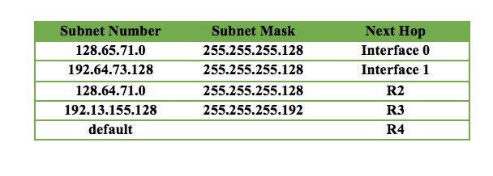
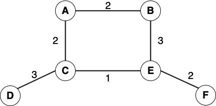
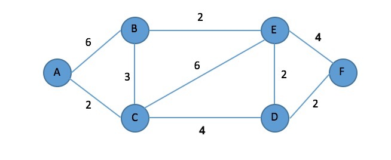

Spring 2022 IS496 Homework 4
Total Points: 70 points
Scope: Chapters 3
Due: May. 4, 2022 by the end of day (11:59 pm CST)
Grouping: To be completed individually
Note: This assignment is also available in the Word Document (.docx) format and can be downloaded here.
Problems
Problem 1: [25 points, 5 points for each sub-question]
Suppose a router has built up the routing table shown in the table below.
The router can deliver packets directly over interfaces 0 and 1, or it can forward packets to
routers R2, R3 or R4. Describe what the router does with a packet addressed to each of the
following destinations:
- 192.64.73.161
- 128.65.71.16
- 128.64.71.88
- 192.13.155.17
- 192.13.155.156

Problem 2: [24 points, 8 points for each sub-question] For the network given as follows, give the global distance vector tables when using the Distance Vector Routing Algorithm for the following three instances. (See tables 3.10 and 3.13 in the textbook as examples.)
- Each node knows only the distances to its immediate neighbors
- Each node has reported the information it had in the preceding step to its immediate neighbors
- Step (b) happens a second time

Problem 3: [21 points] For the network given as follows, show how the link-state algorithm builds the routing table for node A.

Submission Instructions
Create a PDF file containing your answers. Place your name and netid at the beginning of the file.
Upload the file to the corresponding assignment on Canvas.